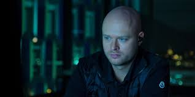

Daniel Ek, el geni de la tecnologia
El protagonista de la sèrie és Daniel Ek, un programador autodidacta que ha aconseguit un gran èxit amb la seva startup, Tradedoubler. Ek és un visionari que creu que la indústria musical necessita un canvi radical.
Martin Lorentzon, el soci ideal
Martin Lorentzon és un empresari amb experiència en el sector de la tecnologia. És el soci ideal d'Ek per a fer realitat el seu somni.
El problema de la pirateria
A principis dels anys 2000, la indústria musical estava en crisi. La pirateria digital estava destrueixent els ingressos dels artistes. Ek i Lorentzon creuen que una plataforma de streaming legal podria solucionar aquest problema.
El naixement de Spotify
El capítol acaba amb el naixement de Spotify. Ek i Lorentzon tenen una idea clara del que volen fer, però el camí no serà fàcil.
Detalls del capítol
El capítol comença amb una escena en què Daniel Ek està a punt d'anunciar la venda de Tradedoubler a una gran empresa. Ek és un home ambiciós que sempre busca nous reptes.
A continuació, la sèrie ens presenta a Martin Lorentzon, un empresari que està buscant una nova inversió. Ek i Lorentzon es coneixen en un sopar i es veuen atrets per les idees de l'altre.
Els dos homes comencen a treballar junts en un projecte secret. Es tracta d'una plataforma de streaming musical que permetria als usuaris escoltar música de forma legal i gratuïta.
Al final del capítol, Ek i Lorentzon presenten el seu projecte a un grup d'inversors. Els inversors estan impressionats per la idea, però dubten de la seva viabilitat.
Crítica
El primer capítol de The Playlist és un bon començament per a la sèrie. Els actors interpreten de manera convincent als seus personatges i la història és interessant i entretinguda.
El capítol també fa una bona feina de situar l'espectador en el context de l'època. La pirateria digital era un problema real que estava afectant a la indústria musical. Ek i Lorentzon van ser visionaris en veure que una plataforma de streaming legal podria solucionar aquest problema.